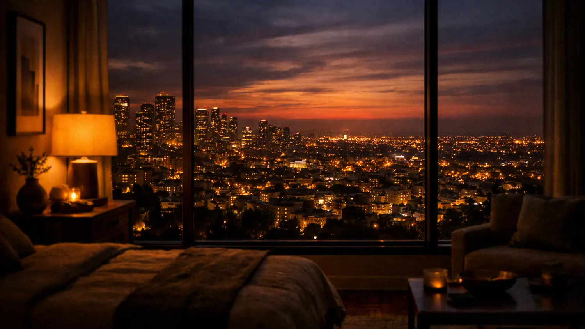
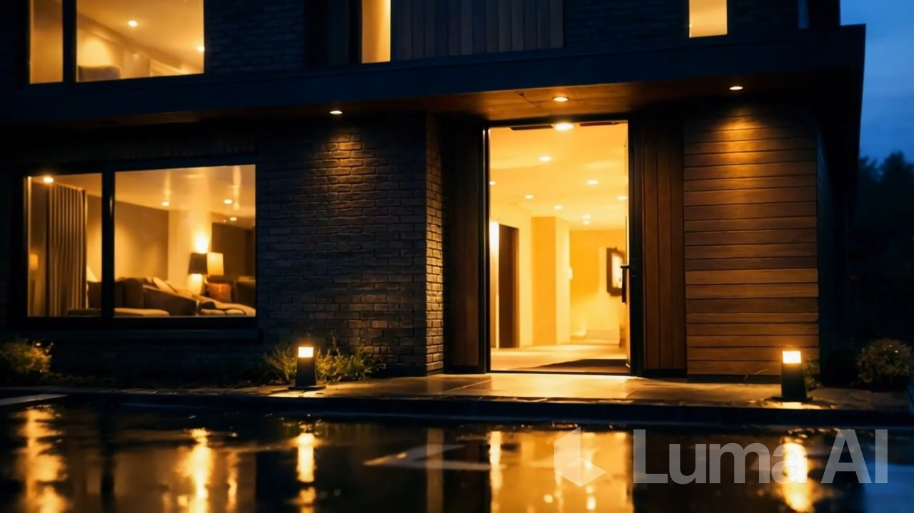
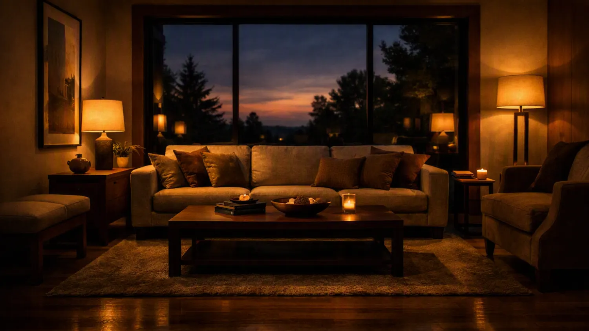
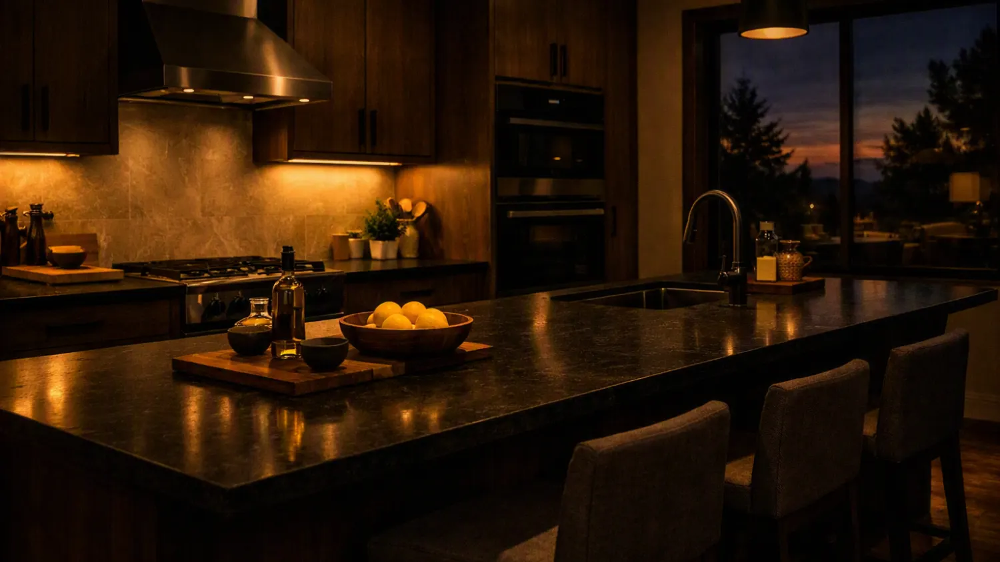

АрендаСнять
Показываем только то, что реально свободно сегодня. Собственник или агент — говорим сразу, комиссию называем до показа, а не в дверях.

Агентство недвижимости. Аренда, покупка, новостройки. На первое сообщение отвечаем за 15 минут — это не обещание в рекламе, а норматив, по которому мы проверяем сами себя.
● Без звонков и анкет на сайте — четыре вопроса в телеграме
Три направления. В боте это первый вопрос — с него и начинается подбор, чтобы не показывать вам чужое.

АрендаПоказываем только то, что реально свободно сегодня. Собственник или агент — говорим сразу, комиссию называем до показа, а не в дверях.

ПокупкаДокументы проверяем до задатка: историю собственников, обременения, перепланировки. Если с квартирой что-то не так — отговорим.

НовостройкиРаботаем напрямую, цена для вас та же, что в отделе продаж. По ипотеке подбираем программу в пятнадцати банках — бесплатно.
Пять шагов от первого сообщения до ключей. Денег не берём до четвёртого.
Четыре вопроса в телеграме: что ищете, город, сколько комнат, бюджет. На первое сообщение отвечаем за 15 минут — в рабочее время это норматив, а не пожелание.
Риэлтор уточняет то, что в анкету не влезло: этаж, район, школа рядом, можно ли с собакой. И честно говорит, что за ваш бюджет реально найти, а что нет.
Перед каждым показом присылаем адрес, этаж и что уже знаем про дом. Чтобы вы не тратили выходной на вариант, который не подойдёт с порога.
Передаётся только после проверки документов: история собственников, обременения, согласие супруга, перепланировки. До этого момента вы не платите ничего.
Договор, регистрация, передача ключей. Сопровождаем до момента, когда вы закрываете за собой дверь — уже свою.
Отвечаем как есть, включая неудобное.
Ниоткуда — на слово верить не нужно. Смотрите на порядок работы: деньги вы платите только на четвёртом шаге, после того как мы проверили документы и показали вам результат проверки.
До этого момента вы ничем не рискуете. Не понравилось, как мы работаем, — уходите на любом шаге, ничего не должны.
Заранее не скажет никто, но проверить ситуацию можно бесплатно и без заявки в банк. Мы подбираем программу в пятнадцати банках и видим, у кого какие требования к первому взносу, стажу и истории.
Напишите город и примерный бюджет — риэлтор скажет, на что рассчитывать, до того как вы начнёте собирать документы.
Задаток передаётся только после проверки квартиры: смотрим историю собственников, обременения, согласие супруга, законность перепланировки.
Если на любом из этих пунктов всплывает проблема — мы говорим об этом до передачи денег, а не после. Такую квартиру просто не доводим до задатка.
В аренде — фиксированная комиссия, размер называем до показа. В покупке и новостройках комиссию платит продавец или застройщик, для вас цена та же, что в отделе продаж.
Консультация и проверка документов до задатка денег не стоят.
Поэтому мы и проверяем до задатка, а не после. Результат проверки отдаём вам на руки — с ним можно пойти к своему юристу, если хотите второе мнение.
Это нормальная просьба, мы к ней спокойно относимся. Агентство, которое обижается на такой вопрос, — плохой знак.
Город — второй вопрос в анкете. Напишите свой, и риэлтор сразу скажет, есть ли у нас там база. Если не работаем — так и ответим, а не будем тянуть.